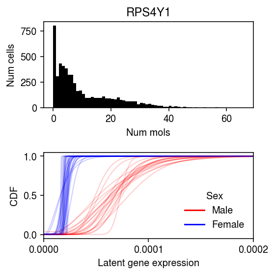
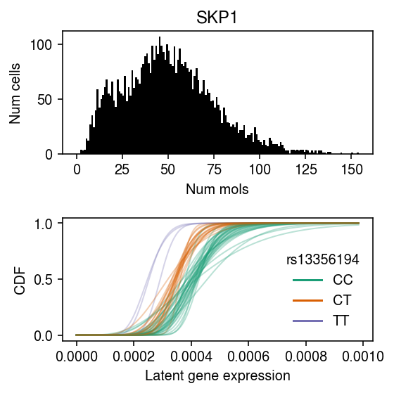

MLCB plots
Table of Contents
Introduction
Draw examples for MLCB submission.
Setup
import numpy as np import pandas as pd import scipy.special as sp import scipy.stats as st import scmodes import sqlite3
%matplotlib inline %config InlineBackend.figure_formats = set(['retina'])
import matplotlib.pyplot as plt plt.rcParams['figure.facecolor'] = 'w' plt.rcParams['font.family'] = 'Nimbus Sans'
Results
MLCB plots
Plot the iPSC examples.
ipsc_res = pd.read_csv('/project2/mstephens/aksarkar/projects/singlecell-modes/data/deconv-generalization/ipsc-gpu.txt.gz', index_col=0, sep='\t') lrt = st.chi2(1).sf(-2 * (ipsc_res['gamma'] - ipsc_res['point_gamma'])) query = list(ipsc_res[lrt < .05 / lrt.shape[0]].index) # SKP1: top eQTL query.append('ENSG00000113558') ipsc_counts = scmodes.dataset.ipsc(prefix='/project2/mstephens/aksarkar/projects/singlecell-qtl/data/', query=query, return_df=True)
annotation = pd.read_csv('/project2/mstephens/aksarkar/projects/singlecell-qtl/data/scqtl-annotation.txt', sep='\t') keep_samples = pd.read_csv('/project2/mstephens/aksarkar/projects/singlecell-qtl/data/quality-single-cells.txt', index_col=0, header=None, sep='\t') annotation = annotation.loc[keep_samples.values.ravel()] s = annotation['mol_hs'] donor_info = pd.read_csv('/project2/mstephens/aksarkar/projects/singlecell-modes/data/20130606_sample_info.txt', sep='\t')
ipsc_log_mu = pd.read_csv('/project2/mstephens/aksarkar/projects/singlecell-qtl/data/density-estimation/design1/zi2-log-mu.txt.gz', sep=' ', index_col=0) ipsc_log_phi = pd.read_csv('/project2/mstephens/aksarkar/projects/singlecell-qtl/data/density-estimation/design1/zi2-log-phi.txt.gz', sep=' ', index_col=0) ipsc_logodds = pd.read_csv('/project2/mstephens/aksarkar/projects/singlecell-qtl/data/density-estimation/design1/zi2-logodds.txt.gz', sep=' ', index_col=0) del ipsc_log_mu['NA18498']
def point_gamma_cdf(grid, log_mu, log_phi, logodds): res = st.gamma(a=np.exp(-log_phi), scale=np.exp(log_mu + log_phi)).cdf(grid) res *= sp.expit(-logodds) res += sp.expit(logodds) return res lam = ipsc_counts.values / s.values.reshape(-1, 1) grid = np.linspace(lam.min(), lam.max(), 1000) cdfs = np.array([[point_gamma_cdf(grid, ipsc_log_mu.loc[j, k], ipsc_log_phi.loc[j, k], ipsc_logodds.loc[j, k]) for k in ipsc_log_mu] for j in ipsc_counts.columns])
gene_info = pd.read_csv('/project2/mstephens/aksarkar/projects/singlecell-qtl/data/scqtl-genes.txt.gz', sep='\t', index_col=0) colors = {k: 'r' if v == 'male' else 'b' for k, v in donor_info.set_index('Sample') .filter(items=list(ipsc_log_mu.columns), axis=0) ['Gender'] .iteritems()}
k = 'ENSG00000129824' x = ipsc_counts.loc[:,k].values plt.clf() fig, ax = plt.subplots(2, 1) fig.set_size_inches(4, 4) ax[0].hist(x, bins=np.arange(x.max() + 1), color='k') ax[0].set_title(gene_info.loc[k, 'name']) ax[0].set_xlabel('Num mols') ax[0].set_ylabel('Num cells') for f, k in zip(cdfs[2], ipsc_log_mu.columns): ax[1].plot(grid, f, lw=1, alpha=0.2, c=colors.get(k, 'k')) ax[1].set_xlim(0, 2e-4) ax[1].set_xticks(np.linspace(0, 2e-4, 3)) dummy = [plt.Line2D([0], [0], c='r'), plt.Line2D([0], [0], c='b')] ax[1].legend(dummy, ['Male', 'Female'], title='Sex', frameon=False) ax[1].set_ylabel('CDF') ax[1].set_xlabel('Latent gene expression') fig.tight_layout()

mean_qtl_stats = pd.read_csv('/project2/mstephens/aksarkar/projects/singlecell-qtl/data/scqtl-mapping/zinb/mean.txt.gz', sep=' ', index_col=0)
with sqlite3.connect('/project2/mstephens/aksarkar/projects/singlecell-qtl/browser/browser.db') as conn: geno = pd.read_sql('select * from mean_qtl_geno where gene = ?', con=conn, params=('ENSG00000113558',)).set_index('ind')['value']
cm = plt.get_cmap('Dark2') k = 'ENSG00000113558' x = ipsc_counts.loc[:,k].values plt.clf() fig, ax = plt.subplots(2, 1) fig.set_size_inches(4, 4) ax[0].hist(x, bins=np.arange(x.max() + 1), color='k') ax[0].set_title(gene_info.loc[k, 'name']) ax[0].set_xlabel('Num mols') ax[0].set_ylabel('Num cells') for f, k in zip(cdfs[1], ipsc_log_mu.columns): ax[1].plot(grid, f, lw=1, alpha=0.3, c=cm(int(geno[k]))) dummy = [plt.Line2D([0], [0], c=cm(i)) for i in range(3)] # https://www.ncbi.nlm.nih.gov/snp/?term=rs13356194 ax[1].legend(dummy, ['CC', 'CT', 'TT'], title=mean_qtl_stats.loc['ENSG00000113558', 'id'].split('.')[0], frameon=False) ax[1].set_ylabel('CDF') ax[1].set_xlabel('Latent gene expression') fig.tight_layout()

Vector format
%config InlineBackend.figure_formats = set(['svg'])
plt.clf() fig, ax = plt.subplots(1, len(results), sharey=True) fig.set_size_inches(8, 2) for a, k, t in zip(ax, results, titles): llik = results[k]['validation'] for x, m in enumerate(llik): a.scatter(x + np.random.normal(scale=0.1, size=llik.shape[0]), llik[m].values, s=1, c='k', zorder=3) a.grid(c='0.8', lw=1, axis='x') a.set_xlim(-0.5, 2.5) a.set_xticks(np.arange(3)) a.set_xticklabels([m.upper() for m in methods], rotation=90) a.set_title(t) ax[0].set_ylabel('Validation log lik') fig.tight_layout()
k = 'ENSG00000129824' x = ipsc_counts.loc[:,k].values plt.clf() fig, ax = plt.subplots(2, 1) fig.set_size_inches(4, 4) ax[0].hist(x, bins=np.arange(x.max() + 1), color='k') ax[0].set_title(gene_info.loc[k, 'name']) ax[0].set_xlabel('Num mols') ax[0].set_ylabel('Num cells') for f, k in zip(cdfs[2], ipsc_log_mu.columns): ax[1].plot(grid, f, lw=1, alpha=0.2, c=colors.get(k, 'k')) ax[1].set_xlim(0, 2e-4) ax[1].set_xticks(np.linspace(0, 2e-4, 3)) dummy = [plt.Line2D([0], [0], c='r'), plt.Line2D([0], [0], c='b')] ax[1].legend(dummy, ['Male', 'Female'], title='Sex', frameon=False) ax[1].set_ylabel('CDF') ax[1].set_xlabel('Latent gene expression') fig.tight_layout()
cm = plt.get_cmap('Dark2') k = 'ENSG00000113558' x = ipsc_counts.loc[:,k].values plt.clf() fig, ax = plt.subplots(2, 1) fig.set_size_inches(4, 4) ax[0].hist(x, bins=np.arange(x.max() + 1), color='k') ax[0].set_title(gene_info.loc[k, 'name']) ax[0].set_xlabel('Num mols') ax[0].set_ylabel('Num cells') for f, k in zip(cdfs[1], ipsc_log_mu.columns): ax[1].plot(grid, f, lw=1, alpha=0.3, c=cm(int(geno[k]))) dummy = [plt.Line2D([0], [0], c=cm(i)) for i in range(3)] # https://www.ncbi.nlm.nih.gov/snp/?term=rs13356194 ax[1].legend(dummy, ['CC', 'CT', 'TT'], title=mean_qtl_stats.loc['ENSG00000113558', 'id'].split('.')[0], frameon=False) ax[1].set_ylabel('CDF') ax[1].set_xlabel('Latent gene expression') fig.tight_layout()
cytotoxic_t = scmodes.dataset.read_10x('/project2/mstephens/aksarkar/projects/singlecell-ideas/data/10xgenomics/cytotoxic_t/filtered_matrices_mex/hg19/', return_df=True)
k = 'ENSG00000109475' x = cytotoxic_t.loc[:,k] s = cytotoxic_t.sum(axis=1) plt.clf() fig, ax = plt.subplots(2, 1) fig.set_size_inches(4, 4) ax[0].hist(x, bins=np.arange(x.max() + 1), color='k') ax[0].set_title(gene_info.loc[k, 'name']) ax[0].set_xlabel('Num mols') ax[0].set_ylabel('Num cells') for c, k in zip(plt.get_cmap('Dark2').colors, ['Gamma', 'ZIG', 'Unimodal', 'ZIEF', 'NPMLE']): ax[1].plot(*getattr(scmodes.deconvolve, f'fit_{k.lower()}')(x, s), color=c, lw=1, label=k) ax[1].set_xlabel('Latent gene expression') ax[1].set_ylabel('CDF') ax[1].legend(frameon=False) fig.tight_layout()
Poster figures
%config InlineBackend.figure_formats = set(['svg'])
data = ['cytotoxic_t', 'b_cells', 'naive_t', 'cytotoxic_t-b_cells', 'cytotoxic_t-naive_t', 'pbmcs_68k'] methods = ['nmf', 'wglmpca', 'pvae'] titles = ['B cell', 'Cytotoxic T', 'Naive T', 'B cell/T cell', 'Naive/cytotoxic T', 'PBMC'] poisthin_res = pd.concat( {k: pd.concat([pd.read_csv(f'/project2/mstephens/aksarkar/projects/singlecell-modes/data/lra-generalization/{k}-{m}.txt.gz', header=[0, 1], index_col=0, sep='\t') for m in methods if not (k == 'pbmcs_68k' and m == 'wglmpca')], axis=1) for k in data}) plt.clf() fig, ax = plt.subplots(2, 3, sharex=True) fig.set_size_inches(5, 4) for a, k, t in zip(ax.ravel(), data, titles): llik = poisthin_res.loc[k]['validation'] for x, m in enumerate(llik): a.scatter(x + np.random.normal(scale=0.1, size=llik.shape[0]), llik[m].values, s=1, c='k', zorder=3) a.grid(c='0.8', lw=1, axis='x') a.set_xlim(-0.5, 2.5) a.set_xticks(np.arange(3)) a.set_title(t) for a in ax[-1]: a.set_xlabel('Method') a.set_xticklabels([m.upper() for m in llik.columns], rotation=90) for a in ax: a[0].set_ylabel('Validation log lik') fig.tight_layout()
data = ['cytotoxic_t', 'b_cells', 'ipsc', 'cytotoxic_t-b_cells', 'cytotoxic_t-naive_t', 'pbmcs_68k'] methods = ['oracle', 'ebpm_point', 'wnmf', 'wglmpca'] imputation_res = (pd.concat({(d, m): pd.read_csv(f'/project2/mstephens/aksarkar/projects/singlecell-modes/data/imputation/{d}-{m}.txt.gz', sep='\t', index_col=0) for d in data for m in methods if d != 'naive_t'}) .reset_index(level=0) .reset_index(drop=True) .rename({'level_0': 'dataset'}, axis=1)) plt.clf() fig, ax = plt.subplots(2, 3, sharex=True) fig.set_size_inches(5, 4) for a, d, t in zip(ax.ravel(), data, ['T cells', 'B cells', 'iPSC', 'T cell/B cell', 'Cytotoxic/naive T', 'PBMC']): g = imputation_res[imputation_res['dataset'] == d] base = g.loc[g['method'] == 'ebpm_point'] for x, m in enumerate(methods[2:]): y = g.loc[g['method'] == m] a.scatter(x + np.random.normal(size=y.shape[0], scale=0.1), 1e5 * (base['loss'].values - y['loss'].values), s=2, c='k', zorder=4) a.axhline(y=0, c='r', lw=1, ls=':') a.set_title(t) a.grid(c='0.8', lw=1, axis='x') for a in ax[-1]: a.set_xticks(np.arange(2)) a.set_xticklabels([m.upper() for m in methods[2:]], rotation=90) a.set_xlabel('Method') a = fig.add_subplot(111, frameon=False) a.tick_params(labelcolor='none', top='off', bottom='off', left='off', right='off') a.set_ylabel('Improvement in Poisson loss\nover mean imputation') fig.tight_layout()
gof_res = pd.read_csv('/project2/mstephens/aksarkar/projects/singlecell-modes/data/gof/gof.txt.gz', sep='\t', index_col=0) plt.clf() fig, ax = plt.subplots(1, 6, sharey=True) fig.set_size_inches(8, 2) for a, t, (k, g) in zip(ax.ravel(), ['T cell', 'B cell', 'iPSC', 'T cell/B cell', 'Cytotoxic/naive T', 'PBMC'], gof_res.groupby('dataset')): a.hist(g.loc[g['method'] == 'gamma', 'p'], bins=np.linspace(0, 1, 11), color='0.7', density=True) a.axhline(y=1, c='k', ls=':', lw=1) a.set_xlim([0, 1]) a.set_title(t) ax[0].set_ylabel('Density') for a in ax: a.set_xlabel('$p$-value') fig.tight_layout()